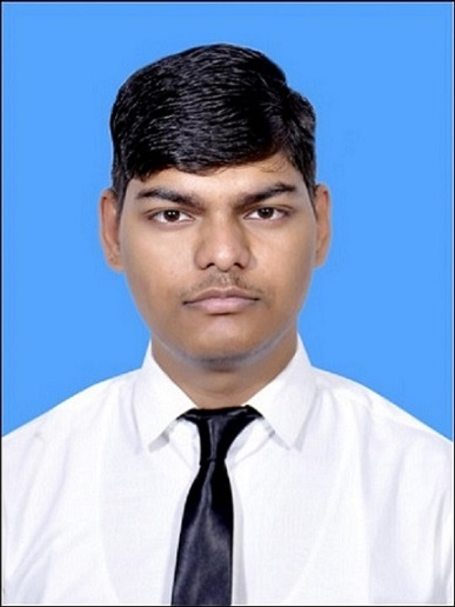

Computer Vision Engineer

Computer Vision Engineer with 2+ years of experience in real-time systems, thermal imaging, and GPU-accelerated AI deployment. Strong background in deep learning, multisensor fusion, and image processing with hands-on experience in deploying models on edge platforms (NVIDIA Jetson). Experience spans thermal target detection, image super resolution, image stabilization, and real-time video pipelines.
B. Tech. in Electronics and Communication — National Institute of Technology Patna | 2020 – 2024 | CGPA: 7.54
“Hardware Implementation of Fixed-Pattern Noise Removal Algorithm for a HD Infrared Detector” — International Conference on Electro-Optics and Photonics (EOP), Springer Nature, 2025